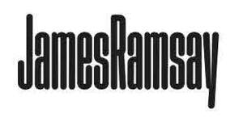

Trade Mark Journal No.2026/012 20 March 2026
UK00004348350 3 March 2026 (11,37)

- Class 11
- Heating apparatus and installations; central heating installations; boilers (other than parts of machines); gas boilers; electric boilers; oil-fired boilers; biomass boilers; heat pumps; air source heat pumps; ground source heat pumps; radiators; towel rails (heated); underfloor heating apparatus and installations; electric underfloor heating systems; wet underfloor heating systems; heating panels; infrared heaters; electric heaters; gas heaters; immersion heaters; hot water cylinders; unvented hot water cylinders; water heaters; hot water tanks; buffer tanks; thermal stores; expansion vessels; valves for heating installations; thermostatic radiator valves; mixing valves; zone valves; pressure relief valves; water control valves for plumbing and heating installations; pipe fittings for heating and plumbing installations; manifolds for underfloor heating; flues and flue pipes; chimney flues; burners for boilers; heat exchangers (not parts of machines); solar thermal collectors; solar heating apparatus; parts and fittings for all the aforesaid goods.
- Class 37
- Installation, maintenance, servicing and repair of heating apparatus and installations; installation, maintenance, servicing and repair of central heating systems; boiler installation, servicing, repair and replacement; installation, maintenance and repair of gas, electric, oil-fired and biomass heating systems; installation, maintenance and repair of heat pumps; installation and repair of underfloor heating systems; plumbing services; installation, maintenance and repair of pipework; installation and repair of water supply systems; installation, maintenance and repair of hot water systems; radiator installation and repair; installation and repair of valves and heating controls; installation of thermostats and heating control systems; power flushing of heating systems; descaling and cleaning of heating and plumbing systems; leak detection and pipe repair; emergency plumbing and heating repair services; advisory services relating to the installation, maintenance and repair of heating and plumbing systems; information and consultancy relating to all the aforesaid services.
James Ramsay (Glasgow) Limited
Representative: Marks & Clerk LLP